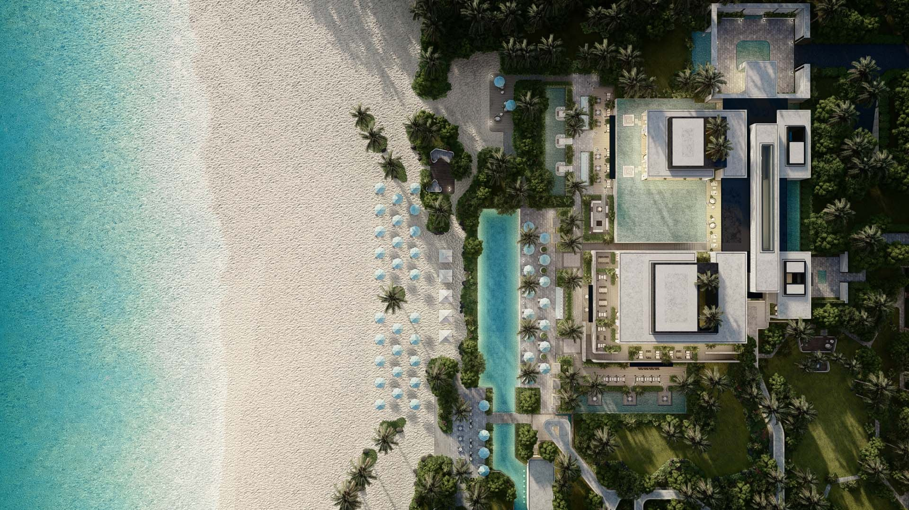
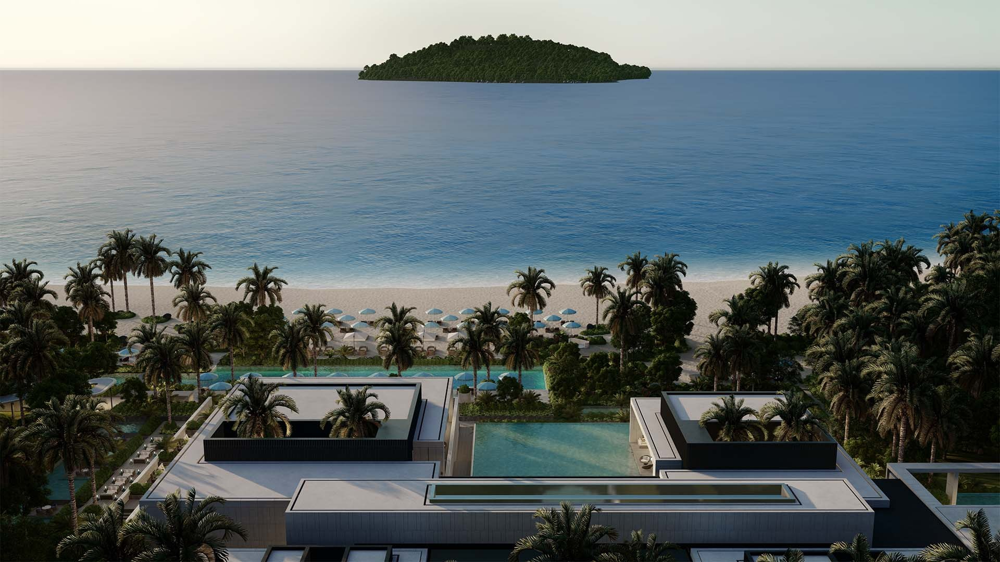
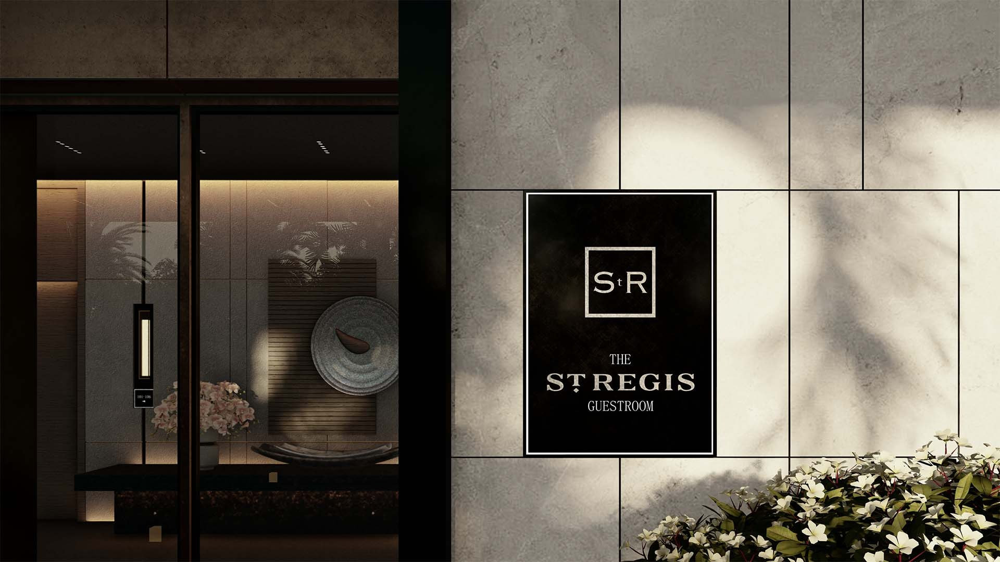
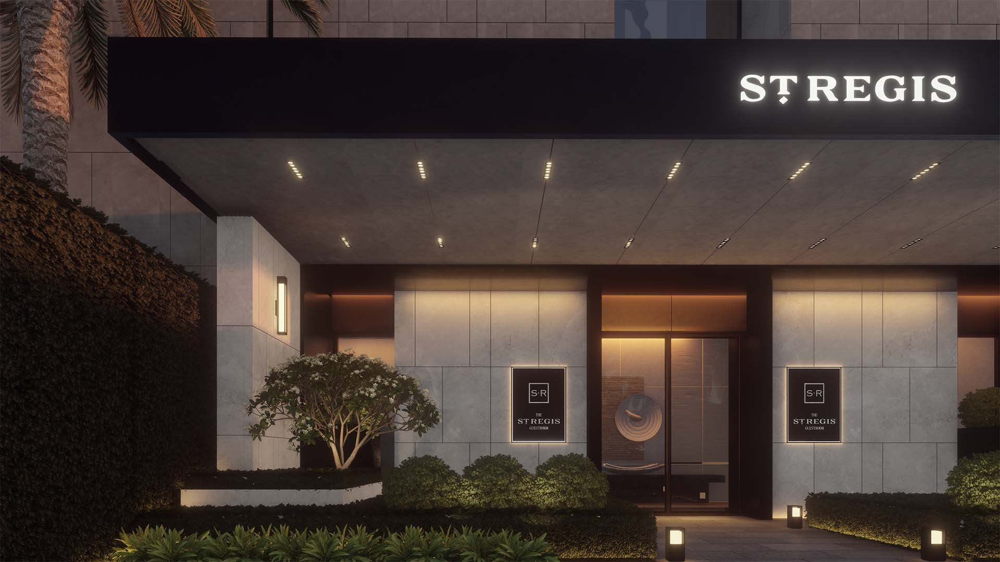
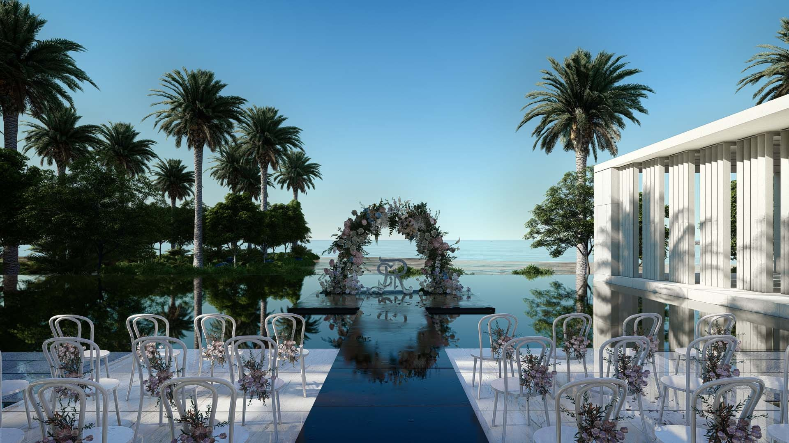
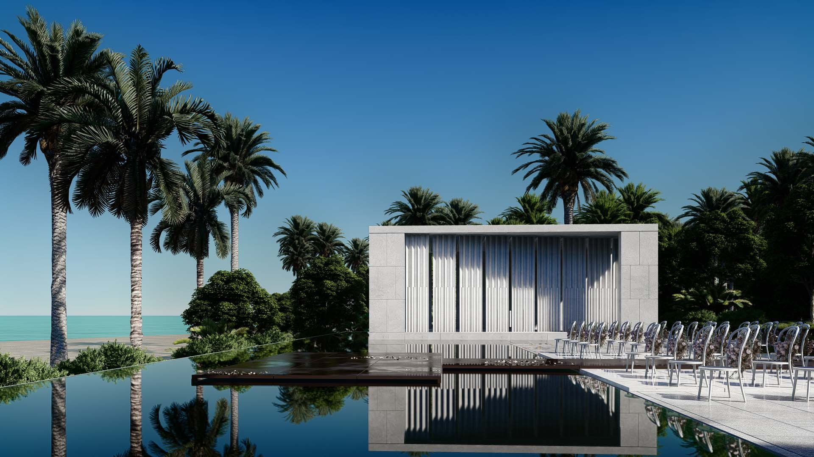
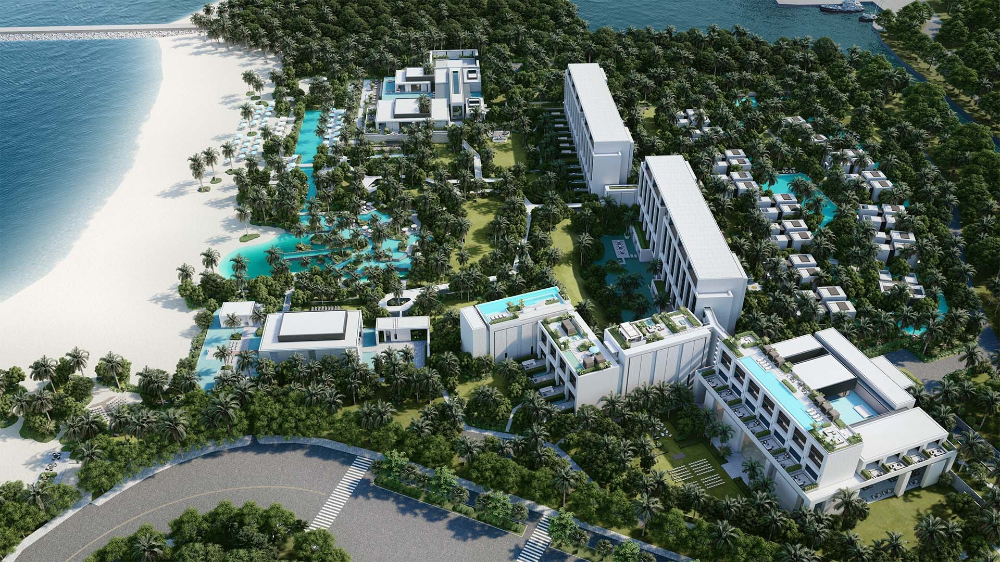

Sanya, Hainan
St. Regis Sanya
H2 project archive · 2023
Marriott International
All work
The project is located on the westernmost side of Sanya Bay, adjacent to the West Island pier. It offers private beach access directly facing West Island. The design aims to integrate St. Regis DNA with the advantage of the beach, placing hotel public areas at the forefront to create a unique BEACHFRONT HOTEL in Sanya.
DESIGN CONCEPT: 1) Dispersing public areas to the beachfront, creating unique sea-view arrivals, sunset beach dining island, and seaside grand hall for hundreds; 2) Rooms with sea views and lagoon features, ensuring all rooms offer scenic vistas; 3) Superior business amenities, special banquet and meeting facilities, Chinese dining, and VIP circulation for the ultimate guest experience; 4) Infusing St. Regis genes from Astor’s New York social settings into the project, imagining a beachfront mansion lifestyle for St. Regis in Sanya Bay. ARCHITECTURAL FORM:The form is elegantly and delicately designed, blending classical and modern elements with large areas of stone, dark wood finishes, and intricate landscaping. Special architectural gestures at entrances and key points, like setback layers, classical arches, and exquisite lighting, enhance the project’s unique identity.












- Location
- Sanya, Hainan
- Year in source archive
- 2023
- Hotel group in archive
- Marriott International
The year is the year stated in the original archive, not a verified completion date. The source may include design-stage imagery. Current naming, status, precise scope and image credits require confirmation before official publication.